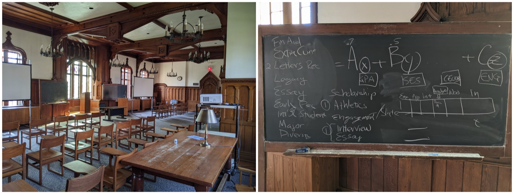
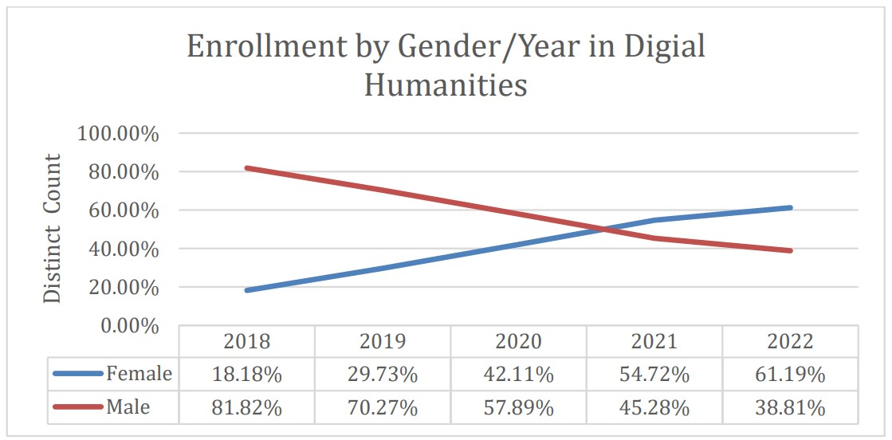
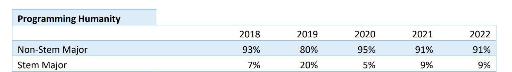

Teaching
I apply industry best practices and state-of-the-art AI and machine learning techniques to high-impact interdisciplinary research, and teach them the same way. Our paper The Crisis of Artificial Intelligence, published in the International Journal of Humanities and Arts Computing, outlines the challenges and opportunities AI presents to higher education, along with the theory, structure and goals of our human-centered approach.
Education and curriculum
Our human-centered curriculum is collaborative at multiple levels and interdisciplinary while maintaining academic rigor. Students from virtually every department across campus create a learning and research environment you do not find in a conventional computer science sequence. The point is not general AI literacy: students learn enough programming, machine learning, generative AI and evaluation to conduct original technical research while bringing their own disciplinary expertise into model design, evaluation and interpretation. Courses begin with disciplinary questions in literature, history and philosophy, then teach programming, natural language processing, machine learning and AI governance as investigative tools. Students progress from questions to technical work to interpretation and, often, to publication.
Research from the AI CoLab has contributed to collaborative projects with institutions including Oxford, UC Berkeley, Carnegie Mellon and Harvard Business School. We focus on productive collaborations that operationalize solutions to the big questions central to the liberal arts experience, including partnerships with industry leaders such as Meta and IBM, government agencies including the NIST AI Safety Institute, and non-profits including the AI Alliance, the MLA, the US Chamber of Commerce and The Helix Center.

Courses
| Course | Title | Introduced |
|---|---|---|
| IPHS 200 | Programming Humanity. Foundational programming and data analysis, and the entry point for students who are not computer science majors. | Fall 2017 |
| IPHS 290 | Cultural Analytics. | Fall 2022 |
| IPHS 300 | AI for the Humanities. Machine learning and AI concepts building on the foundational programming course. | 2019 |
| IPHS 391 | Frontiers in Generative AI: Autonomous Agent Networks. Agentic AI and multi-agent systems. Approved 2023, first taught Fall 2024. | Fall 2024 |
| IPHS 484 | Senior Seminar and Research. The capstone research project. | 2018 |
| Custom | Industrial IoT Predictive Maintenance. An industry collaboration on end-to-end time series prediction. | 2021 |
Course repositories
Full course material for Frontiers in Generative AI is public on GitHub:
- IPHS 391, Fall 2024: frontiers-of-ai-automating-intelligence-with-multi-agent-frameworks
- IPHS 391, Fall 2025: GenAI-Multi-Agent-Networks-and-Digital-Twins
Student projects
Undergraduate research published on Digital Kenyon. These are a sample; the full collections are linked at the end of this section.
Projects using SentimentArcs
- Literature: Sentiment Analysis and Nabokov's Pale Fire
- Translations: Cross-Linguistic Survey of Kafka's Trial
- TV scripts: Storytelling and Sentiment Analysis in Shark Tank
- Medical narratives: Five Stages of Grief in End-of-Life Memoirs
- Social media: Sri Lankan Protestors and Political Change
- Elections: Quantifying Polarization around Election Denial
Projects from Frontiers in Generative AI, Fall 2024
- AI-Powered MLB Roster Construction
- AI-Powered Appointment Prioritization for Resource-Poor Settings
- PitchAI: Streamlining Investment Banking Pitches Using LLMs
- Ancient Greek Parsing with AI: Agentic System
- AI Chatbot for College Disability Services Support
- Agentic Framework for Data-Driven Cricket Player Scouting
Impact and access
| Metric | Value |
|---|---|
| Research downloads | 130,000 or more (130,316 as of September 15, 2026) |
| Institutions reached | 4,700 or more, in 198 countries |
| Top visiting institutions | Stanford, Berkeley, Carnegie Mellon, NYU, Columbia, MIT, Princeton, Oxford, Cambridge |
| Published undergraduate projects | 190 or more on Digital Kenyon |
| Projects mentored | 300 or more since 2017 |
| Female enrollment | 61 percent, up from 18 percent in 2017 |
| Students not majoring in STEM | More than 90 percent |
| Black students | 13 percent |
| Latine students | 11 percent |
| Drop rate and pass rate | 0 percent and 100 percent |
| Enrollment growth | 20 to 120 students, 2017 to 2022 |


Program timeline
-
Aug 2015
Formulated the detailed interdisciplinary AI curriculum.
-
Mar 2017
Led the Kenyon team at the HackOH5 hackathon.
-
Aug 2017
First Programming Humanity course.
-
Aug 2018
First AI for the Humanities course. Katherine Elkins awarded the NEH Distinguished Professorship.
-
Aug 2022
First Cultural Analytics course, and the first Industrial IoT collaboration.
-
2023
Joined the Meta Global Scholars Research Group.
-
2024
Co-PI for the NIST AI Safety Institute Consortium and for the IBM and Notre Dame Tech Ethics grant. First Frontiers in Generative AI course.
-
2026
Co-PI for the Schmidt Sciences HAVI grant.